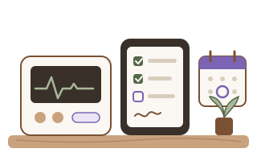
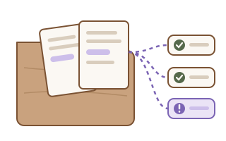
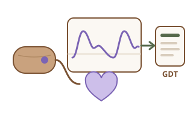

Hallo, ich bin Aron.
Medizintechniker (B.Eng.) aus Jena
Ich arbeite dort, wo Messgeräte, Daten und Software zusammenkommen. Ich werte Messdaten aus, digitalisiere Prüfabläufe und nutze dafür Python und KI-Werkzeuge wie Claude. Die Regeln der Branche – MDR, ISO 13485, Datenschutz – denke ich dabei mit.
Offen für eine Festanstellung in der Medizintechnik. Für kleine Projekte bin ich ab 2027 verfügbar.
Wobei ich helfen kann
Wählen Sie ein Thema. Auf jeder Seite finden Sie ein kurzes Beispiel, meine Rolle und mein Vorgehen.
-

Messdaten auswerten und Prüfberichte erstellen
Sie übertragen Messwerte noch von Hand in Excel und bauen jeden Bericht neu?
Demo in Arbeit -

Beschwerde- und Marktdaten aufbereiten (Post-Market Surveillance)
Ihre Rückmeldungen liegen in E-Mails, Excel und Servicesystemen verteilt?
Demo geplant -

Prüf- und Wartungsdokumentation digitalisieren
Prüfprotokolle auf Papier, Fristen im Kopf oder im Kalender?
Demo geplant -

Technische Dokumentation unterstützen
Gleiche Angaben in vielen Dokumenten, und nach jeder Änderung passt etwas nicht mehr zusammen?
Zuarbeit -

KI-Arbeitsabläufe mit Claude einrichten
Ihr Team möchte KI nutzen, weiß aber nicht, wo anfangen und wie sicher?
8 Zertifikate, Demo in Arbeit -

Biosignale auswerten und Geräte anbinden
Sie möchten wissen, wie gut Ihr Algorithmus wirklich misst, oder Daten an die Praxissoftware übergeben?
Beleg: biosignal-gdt
So arbeite ich
Klein anfangen
Ein konkreter Ablauf, der heute Zeit kostet. Kein Großprojekt.
Nachvollziehbar bauen
Code mit Tests und Anleitung. Das Ergebnis läuft bei Ihnen, Ihre Daten bleiben bei Ihnen.
Klare Verantwortung
Ich liefere Werkzeuge und Entwürfe. Bewertung und Freigabe bleiben bei Ihnen.
Kontakt
Am einfachsten per E-Mail: dkaron50@gmail.com. Mehr über meinen Werdegang finden Sie unter Über mich.